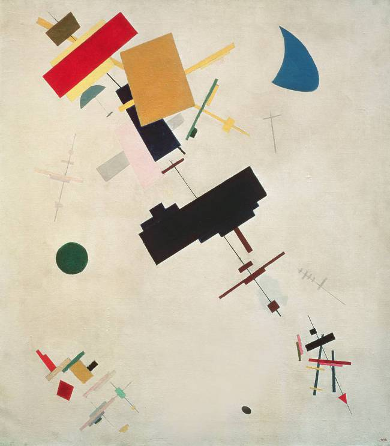
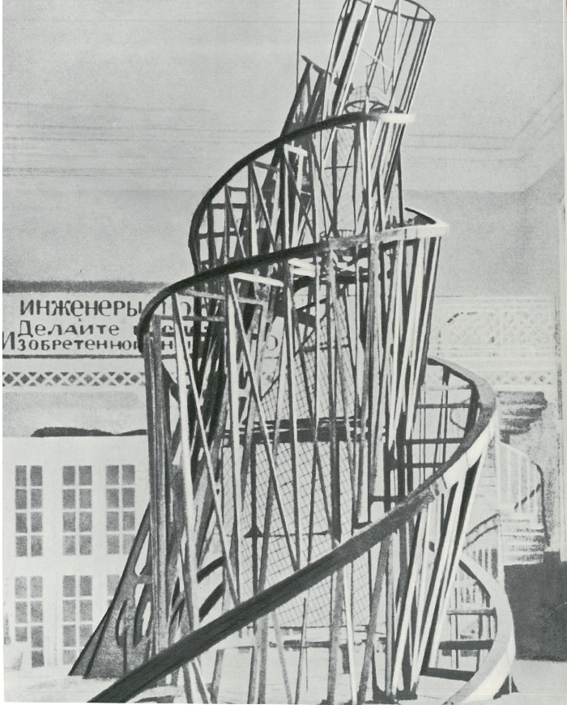

◆ ◇ ◆ STYLE ◆ ◇ ◆
ロシア・アヴァンギャルドから、 ロシア構成主義とシュプレマティズムという2つの重要な芸術様式が生まれている。
● シュプレマティズム（suprematizm）
ロシアの画家 マレービチが1915年に描き始めた幾何学的な抽象絵画の名称。
“絶対主義”、“至高主義”などと訳されるが、彼自身によれば“シュプリーム”とは 自然に存在する対象を排除し、
幾何学的な色彩平面形態だけを描くことであり、純粋な感覚から生み出す無対象絵画こそ芸術である、と主張した。
▼ カジミール・マレーヴィチ『Suprematism』

● ロシア構成主義
もともとは1921年頃、革命後のロシアに現れた前衛美術運動の一派であるが、その後東欧から中欧にかけて、
デザインや建築にまで広がった大規模な国際的芸術運動である。
画架にのせて描く絵画を否定し、現代社会で普通にみられる工業材料(金属、ガラスなど)を使って
物理学的な均衡感覚に基づく抽象的な美や、運動という力動的な美を表現する構成主義的な作品。
工業的経済発展こそが社会的進歩なのだ、というところから始まっている。
▼ ウラジーミル・タトリン 『第３インターナショナル記念塔』
